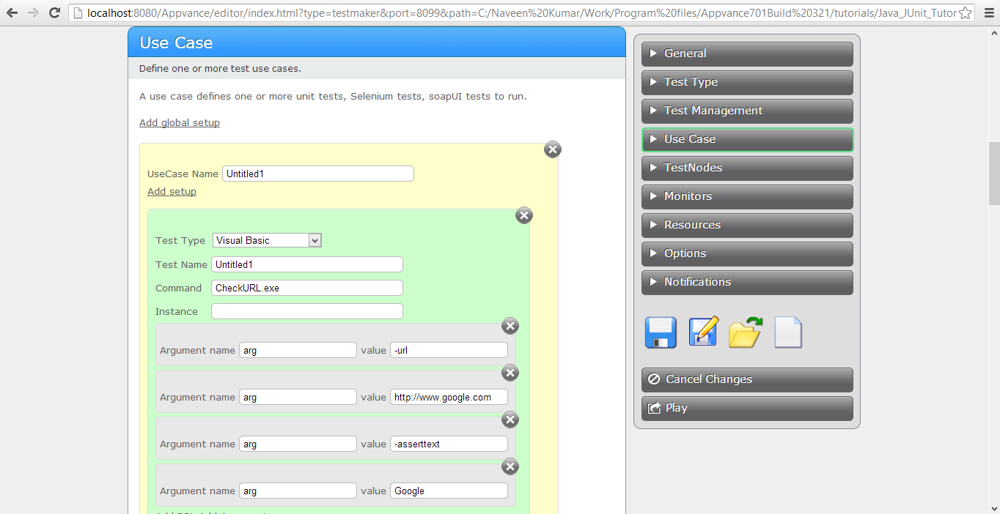

Testing with Visual Basic 6
Appvance PerformanceCloud(APC) provides a Visual Basic ScriptRunner to accomplish the following:
- Write unit tests
in Visual Basic 6 of your application. Repurpose the unit tests to be
functional tests, load and performance tests, and production monitors
of your application.
- Visual Basic 6 applications are often GUI applications that are supposed to be run interactively by users. APC uses its ability to run command line applications to support VB applications developed as scripts that run GUI less.
The following is a simple
application Appvance created in Visual Studio. We made
the GUI-Less by removing the Forms and using a simple module
with an Main
subroutine. This example
uses the WinInet library to read a page and then a string search to
assert it contains some text.
First, let's declare the libraries needed:
Option Explicit
Const INTERNET_OPEN_TYPE_PRECONFIG = 0
Const INTERNET_FLAG_EXISTING_CONNECT = &H20000000
Private Declare Function InternetOpen Lib "wininet.dll" Alias "InternetOpenA" _
(ByVal lpszAgent As String, ByVal dwAccessType As Long, _
ByVal lpszProxyName As String, ByVal lpszProxyBypass As String, _
ByVal dwFlags As Long) As Long
Private Declare Function InternetOpenUrl Lib "wininet.dll" Alias _
"InternetOpenUrlA" (ByVal hInternetSession As Long, ByVal lpszUrl As String, _
ByVal lpszHeaders As String, ByVal dwHeadersLength As Long, _
ByVal dwFlags As Long, ByVal dwContext As Long) As Long
Private Declare Function InternetCloseHandle Lib "wininet.dll" (ByVal hInet As _
Long) As Integer
Private Declare Function InternetReadFile Lib "wininet.dll" (ByVal hFile As _
Long, ByVal lpsBuffer As String, ByVal dwNumberOfBytesToRead As Long, _
lNumberOfBytesRead As Long) As Integer
Private
Declare Function ExitProcess Lib "kernel32" (ByVal
uExitCode As Long)
The last line adds the exit process call to send an exit code. We use this to tell APC that the script finished correctly or in error.
Next the application parses the input arguments:
Sub Main()
Dim aArgs() As String
Dim hInternetSession As Long
Dim hUrl As Long
Dim lBytesRead As Long
Dim ok As Boolean
Dim sBuffer As String
Dim sResp As String
Dim sAssertText As String
Dim sURL As String
Dim i, j As Integer
On Error GoTo ErrorHandler
aArgs = Split(Command$, " ")
sAssertText = ""
sURL = ""
For i = LBound(aArgs) To UBound(aArgs)
Select Case LCase(aArgs(i))
Case "-url"
' url specified
If i = UBound(aArgs) Then
Err.Raise 1000, , "Unexpected end of parameters"
Else
i = i + 1
End If
If Left(aArgs(i), 1) = "-" Or Left(aArgs(i), 1) = "/" Then
Err.Raise 1001, , "URL is missing"
Else
sURL = aArgs(i)
End If
Case "-asserttext"
' AssertText specified
If i = UBound(aArgs) Then
Err.Raise 1002, , "Unexpected end of parameters"
Else
i = i + 1
End If
If Left(aArgs(i), 1) = "-" Or Left(aArgs(i), 1) = "/" Then
Err.Raise 1003, , "Assert Text is missing"
End If
If Left(aArgs(i), 1) = """" Then
sAssertText = Right(aArgs(i), Len(aArgs(i)) - 1)
i = i + 1
j = i
While (j < UBound(aArgs))
If Right(aArgs(i), 1) = """" Then
sAssertText = sAssertText + " " + Left(aArgs(i), Len(aArgs(i)) - 1)
i = j
j = UBound(aArgs) ' done this way because compiler did not accept exit while
Else
sAssertText = sAssertText + " " + aArgs(j)
j = j + 1
i = i + 1
End If
Wend
Else
sAssertText = aArgs(i)
End If
Case Else
Err.Raise 1004, , "Invalid Parameter " + LCase(aArgs(i))
End Select
Next
i
This example accepts two parameters:
-url to pass the URL of the page to load
-asserttext to indicate the text that should be in the page content for the validation
Next the example code loads the page and saves it to a string:
If sAssertText = "" Then
Err.Raise 1005, , "No Assert Text Indicated"
End If
If sURL = "" Then
Err.Raise 1006, , "No URL Indicated"
End If
If Len(sURL) = 0 Then Err.Raise 5
' open an Internet session, and retrieve its handle
hInternetSession = InternetOpen(App.EXEName, INTERNET_OPEN_TYPE_PRECONFIG, _
vbNullString, vbNullString, 0)
If hInternetSession = 0 Then Err.Raise 1007, , _
"An error occurred calling InternetOpen function"
' open the file and retrieve its handle
hUrl = InternetOpenUrl(hInternetSession, sURL, vbNullString, 0, _
INTERNET_FLAG_EXISTING_CONNECT, 0)
If hUrl = 0 Then Err.Raise 1008, , _
"An error occurred calling InternetOpenUrl function"
sBuffer = Space(4096)
sResp = ""
Do
' reads Response
ok = InternetReadFile(hUrl, sBuffer, Len(sBuffer), lBytesRead)
If lBytesRead = 0 Or Not ok Then Exit Do
sResp = sResp + Left$(sBuffer, lBytesRead)
Loop
' Checks text to assert
If InStr(1, sResp, sAssertText, vbTextCompare) = 0 Then
Err.Raise 1009, , "Assert Failed! " + sAssertText + " was not found"
End If
The last steps in the code above checks for the presence of the text to assert.
We build this to a .exe.
We use the APC Scenario Builder to reference the .exe file in a APC Scenario.

Internal to the TestScenario XML we identify the .exe in the resources:
<resources>
<module name="VB6" path="CheckURL.exe"/>
</resources>
CheckURL is the name of the executable we created.
Now, we will cal the application indicating in the langtype it is a visualbasic app. Also, note the parameters we pass.
<run name="Untitled1" command="CheckURL.exe" langtype="Visualbasic">
<argument name="arg" value="-url"/>
<argument name="arg" value="http://www.google.com"/>
<argument name="arg" value="-asserttext" />
<argument name="arg" value="Google"/>
</run>
|